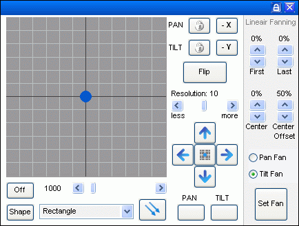
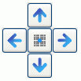
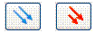

Panel Description - Pan/Tilt Panel

The movement (pan/tilt) panel is used to control beam direction for moving lights. Movement can be manually controlled and put into sequences step by step or alternatively put into sequences as predefined shapes. Panel Description - Bezier Shapes.
Additionally, there is a fanning control which is used for aligning multiple fixtures. This function only has an affect when more than one fixture is selected.
See: Panel Description - Fanning
Coordinate system
In the Coordinate system, the X axis is the Pan control and the Y axis is the Tilt control.
The controls are done by moving the blue ball around with the mouse, or finer control can be done with the blue arrows.
Resolution
The “Resolution” fader is used to set XY/ mouse reaction so it fits the user's application.
Sometime rough control is needed and sometimes fine control is needed.
Lock axis
If only one axis is to be moved then the axis can be locked with the padlock to prevent unwanted changes.
The locked axis will then not change when the ball is moved.
Both axis can be locked at the same time.
Fine Tune
To fine tune the position, the 4 arrows are available. These arrows will increase / decrease the control channel 1 unit per click.
To center the position, press the “Center” button in the middle.

Some fixtures have extra Pan and Tilt control channels. This may be named Pan / Tilt 16bit or Pan / Tilt fine.
FreeStyler of course supports these extra channals.
They are named Pan / Tilt 16bit. And to access them the shift key are to be pressed when the fine tune arrows are used.
See: Fixture Creator - Movement configuration
Up / Down, Left / Right adjust the Pan / Tilt 8bit channel.
Shift + Up / Down, Left / Right adjust the Pan / Tilt 16bit channel.
Note:
Not all fixtures are made with a default value that brings the fixture to the middle position.
The optimal default value for pan and tilt is 127 or 128 but are sometimes by mistake set to 0.
However the “Center” button brings the fixture to mid position, 127.
See: Fixture Creator - Channel Description
Flip.
This function turns the fixture 180 degrees but maintains the same beam direction.
This is useful if the beam is in a position where a turn will bring it past the fixture's turning limit.
By pressing Flip it will be placed in 180 deg position still with the beam in the same direction. The turn can now be performed without going into the limit.
Note this is only valid for fixture that can turn 360 deg or more.
To work properly it requires that range is defined.
See: Fixture Creator - Movement configuration
Inverse Pan and Tilt.
The –X button inverts the Pan channel's current value and –Y inverses the Tilt channel.
So for example, if the pan (X value) is half-way to the left and you press -X, the pan will jump to half-way to the right.
Note: This (below) isn't what happens for me; is it right? (Lindsay)
The inversion is done on the output which means that all displayed values in the panels are as normal.
Example Pan inversed.
The blue ball is moved from left to right, Fine Tune “→” pressed the value in the faders on the right side of the main window goes from 0 → 128 → 255.
Looking in the output window, “Output” → “Show Output” the value goes from 255 → 128 → 0.
Absolute / Relative movement.

Absolute / Relative movement works on a group of fixtures.
The blue arrow is absolute movement, where fixtures are immediately moved to the position of the blue ball when it is changed.
The initial Pan and Tilt position is of no matter. All selected fixtures will go to the same new position.
When the relative movement is enabled (Red arrow), then the fixtures will only be moved relative to the initial position (no jumping).
Example.
4 fixtures are set one by one to a unique position.
All fixtures are then selected and “Relative movement” is enabled.
The fixture will now be moved relative to there initial position.
Initial position is F1: Pan = 110, F2, Pan = 120, F3: Pan = 130, F4: Pan = 140
Relative movement enabled and the blue ball is now move 20 to the right.
Position is then F1: Pan = 130, F2, Pan = 140, F3: Pan = 150, F4: Pan = 160
Bezier Shape.
Shape is basically a predefined shape or pattern which the pan and tilt movement will follow continuously.
This makes it easy to make the light move without making sequences with a lot of steps/points.
The shape generator is not a stand alone movement control but a function that goes into a cue like everything else.
The On/Off button is as the name says used to switch the automated movement on or off.
Speed is controlled with the slider. It has a range from 0 to 10000. Default is 1000.
0 is the slowest speed (and though the value is 0 then the shape still moves).
In the shape box 6 different shapes can be selected.
The “Shape” button opens the Bezier shape window where it is possible adjust or edit the shape.
For further information on Bezier Shapes see: Panel Description - Bezier Shapes
Note:
The Blue Ball does not move during shape playback.
When running Shape the Blue ball does not move. However monitoring the DMX output for Pan and Tilt it can be seen that these values change with the shape.
The update of the blue ball's position was removed because of some issues.
{kind=link}
{kind=link}
{kind=link}
{kind=link}
{kind=link}
{kind=link}
{kind=link}
{kind=link}
{kind=link}
{kind=link}
{kind=link}